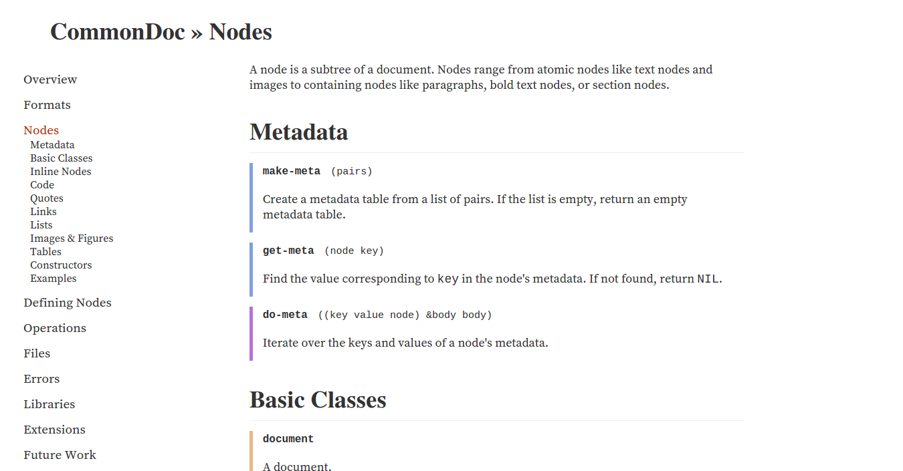
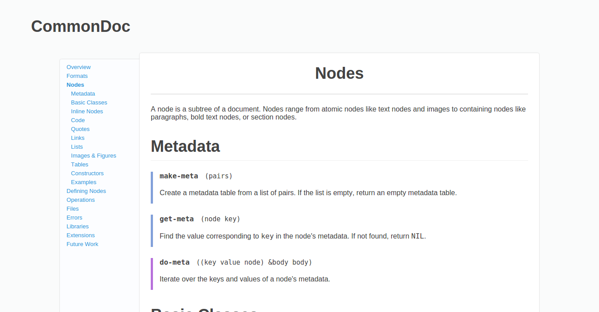

Templates
Codex ships with two templates, Minima and Gamma.
Minima

Minima is, as the name implies, a minimalist theme. It's name in manifest files
is :minima.
Gamma

Gamma is the template you're looking at. It's inspired by the Stripe documentation.
You can use it by setting :template to :gamma in manifest.